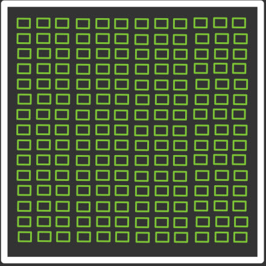

cpu gpu
| cpu | gpu |
|---|---|
| 직렬 처리 방식 | 병렬 처리 방식 |
| 소량의 고성능 코어 연산 | 수 천개의 저성능 코어로 연산 |
| 복잡한 작업을 순차적으로 수행 | 단순 작업을 동시에 많은 양을 수행 |
| 다양한 연산 수행 가능 | 그래픽 처리에 특화 |
그래픽 처리를 위해선 동시에 입력되는 수 천 개의 픽셀 단위의 정보를 동시에 실시간으로 처리를 해야하는데 이는 픽셀 단위의 정보 하나만 보면 단순한 연산이지만 동시에 처리되는 정보의 양이 엄청나게 많은 연산이다.
여기서 그러면 cpu의 코어 수를 수 천개로 늘려서 쓰면 되지 왜 굳이 gpu가 필요하냐 하겠지만 cpu의 코어 수를 늘려 그래픽처리를 하게되면 고성능, 고비용의 코어가 그만큼 늘어나므로 cpu 가격이 너무나 비싸지고 단순한 연산에 고성능 코어를 쓰는 것은 낭비이기 때문에 cpu의 역할은 순차적이고 복잡한 연산에 집중시키고 그래픽 처리를 전적으로 담당하는, 수 천개의 낮은 성능의 코어로 구성된 gpu를 만들게 되었다. 즉, 여러가지 효율성 측면에서 gpu가 필요한 것이다.